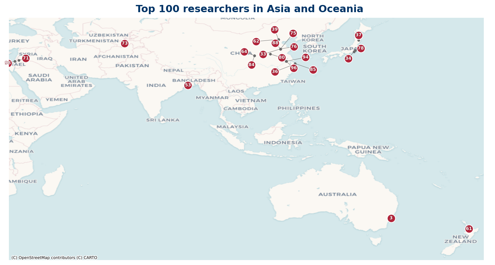

Asia
Top 100 researchers based in Asia
20 Top 100 researchers are based in Asia and Oceania.

Listing
| Rank | Name | Institution | Country |
|---|---|---|---|
| 3 | Igor E. Shparlinski | UNSW Sydney | AU |
| 33 | Jianya Liu | Shandong University | CN |
| 34 | Yoichi Motohashi | Nihon University | JP |
| 36 | Jinjiang Li | Shanghai Jiao Tong University | CN |
| 37 | Koichi Kawada | Iwate University | JP |
| 39 | Min Zhang | Beijing Information Science & Technology University | CN |
| 53 | Stephan Baier | Ramakrishna Mission Vidyamandira | IN |
| 61 | Kevin Broughan | University of Waikato | NZ |
| 62 | Wenguang Zhai | Beihang University | CN |
| 64 | Ping Xi | Xi'an Jiaotong University | CN |
| 71 | Malik Bataineh | Jordan University of Science and Technology | JO |
| 73 | З. Х. Рахмонов | Academy of Sciences of the Republic of Tajikistan | TJ |
| 75 | Guangshi Lü | Shandong University | CN |
| 76 | Tao Zhan | Shandong University | CN |
| 78 | Hiroshi Mikawa | University of Tsukuba | JP |
| 80 | Tianze Wang | North China University of Water Resources and Electric Power | CN |
| 84 | Victor Z. Guo | Xi'an Jiaotong University | CN |
| 85 | Tianxin Cai | Tongji University | CN |
| 88 | Liangyi Zhao | Shandong University | CN |
| 94 | Hao Pan | Nanjing University of Finance and Economics | CN |